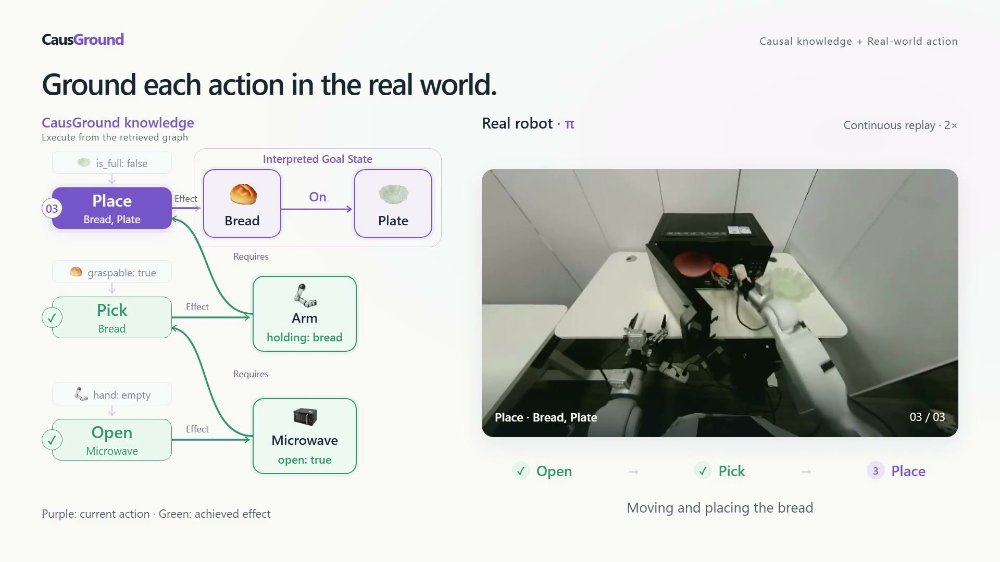
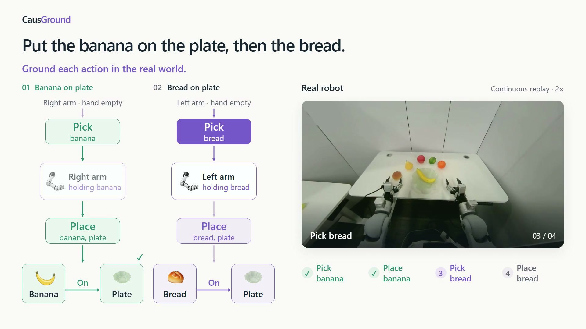

VirtualHome
24.9%→53.3%
Average task successRetrieval from recorded mechanisms. Initial scene conditions remain to be checked; this animation is not a robot execution.
24.9%→53.3%
Average task success43.0%→57.0%
Closed-loop planning success25.8%→31.9%
Interaction reasoning accuracy| Planner | Method | VirtualHome Success rate | VirtualHome Final progress | RoboCasa One-shot | RoboCasa Replanning |
|---|---|---|---|---|---|
| Qwen3.5-9B | Vanilla | 10.7 | 23.8 | 31.0 | 36.7 |
| SelfReVision | 22.7 | 34.1 | 26.8 | 26.5 | |
| LookPlanGraph | 20.0 | 39.7 | 19.7 | 28.6 | |
| CausGround | 44.0 | 61.5 | 45.1 | 46.9 | |
| Qwen3.5-27B | Vanilla | 33.3 | 46.9 | 27.9 | 57.8 |
| SelfReVision | 42.7 | 55.0 | 18.3 | 39.1 | |
| LookPlanGraph | 56.0 | 71.6 | 24.4 | 53.1 | |
| CausGround | 62.7 | 79.8 | 27.9 | 75.0 | |
| Qwen3.5-35B-A3B | Vanilla | 30.7 | 44.4 | 21.9 | 34.4 |
| SelfReVision | 37.3 | 47.9 | 15.1 | 4.9 | |
| LookPlanGraph | 33.3 | 47.2 | 19.2 | 23.0 | |
| CausGround | 53.3 | 72.6 | 43.8 | 49.2 |
VirtualHome results are macro-averaged over short, medium, and long tasks.
23.3% → 50.7%
Average VirtualHome task success across six backbones from Gemma 4, InternVL3.5, and Qwen3.5.
Illustrated causal retrieval with real robot recordings.

Open video ↗
Open video ↗Citation details will be added with the paper release.